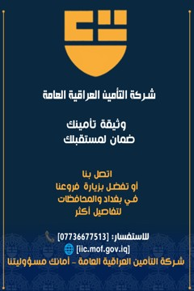
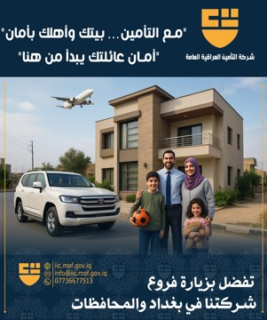

عن المنصة
هذه النسخة تم إعدادها بناءً على آخر تحديث لطلباتكم، وتتضمن بنية جاهزة للتطوير الفوري. تم تضمين العناصر التالية: شريط دعوة للتواصل مع المساعد الذكي، أقسام تعريفيّة وخدمية، معرض صور، مساحات جاهزة للاستمارات، وملفات مرجعية داخل حزمة التحميل.
الخدمات
-
تواصل ذكي 24/7
مساعد ذكي يجيب عن الاستفسارات المتعلقة بالوثائق، الأقساط، والفروع.
-
هيكل قابل للتطوير
تمهيد لإضافة استمارات إلكترونية (طلب وثيقة، الشكاوى، حجز مقابلة).
-
أصول إعلامية
صور توعوية وتسويقية مضمنة داخل الحزمة لاستخدامها فوراً.
-
مراجع مدمجة
مستندات مرجعية رسمية ضمن مجلد
docsلتعزيز دقة المحتوى.
المعرض


الاستمارات (جاهزة للإضافة)
هذا القسم مهيأ لربط الاستمارات الإلكترونية التي سنصممها لاحقاً (طلب وثيقة، الاستفسارات، الشكاوى،
طلب مقابلة المدير العام، …). تجدون نماذج أولية داخل مجلد forms.
تواصل معنا
- الموقع: بغداد / الكرادة / ساحة عقبة بن نافع / شارع خالد بن الوليد
- الهاتف: 07736677513
- البريد: info@iic.mof.gov.iq
- الموقع الإلكتروني: www.iic.mof.gov.iq